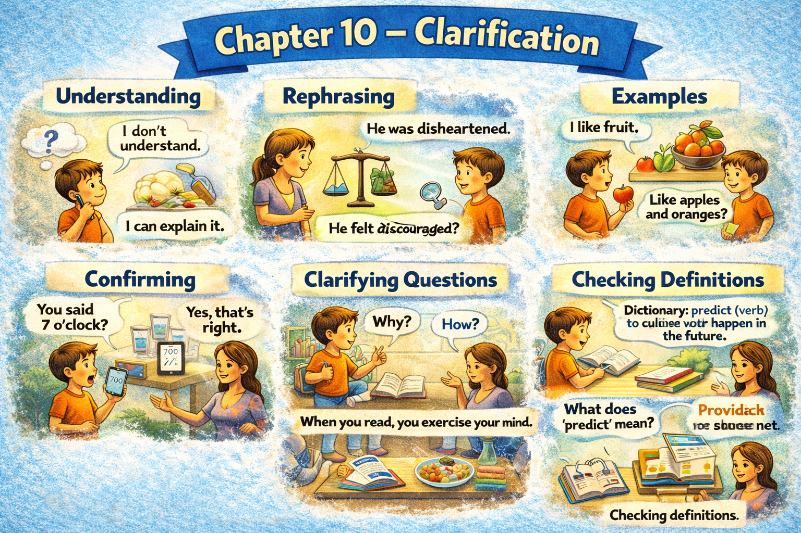

Chapter 10 — Clarification

Micro Scene 1 — Defining Terms
1️⃣ Scene Text
Before discussing a complex issue, I clarify key terms.
If definitions remain vague, misunderstanding becomes likely.
When I use a word, I try to specify what I mean by it.
For example, “efficiency” can refer to speed, accuracy, or resource optimization.
Without a clear definition, agreement becomes superficial.
Clarification reduces ambiguity.
Precise language narrows interpretation.
If two people use the same word differently, confusion follows.
Defining terms creates shared reference points.
Conceptual clarity precedes productive discussion.
Meaning must be established before evaluation.
2️⃣ Core Verb Pool
clarify
remain
become
specify
refer
reduce
narrow
follow
create
precede
establish
3️⃣ Structure Patterns
Before X + verb, Y + verb
If X + verb, Y + verb
X refers to + noun
Without X, Y + verb
X precedes + noun
Meaning must be + past participle
4️⃣ Replace & Extend
Replace the term:
Efficiency refers to speed.
→ Stability refers to consistency.
→ Focus refers to sustained attention.
Replace the ambiguity:
Without definition, agreement is superficial.
→ Without clarity, discussion becomes vague.
→ Without precision, interpretation expands.
Replace the sequence:
Clarity precedes evaluation.
→ Understanding precedes judgment.
→ Definition precedes measurement.
5️⃣ Spoken Mode
Before we discuss it, let’s define what we mean.
If the terms aren’t clear, confusion starts.
The same word can mean different things.
Clarity comes before evaluation.
We need shared definitions first.
🔎 Structural Notes
• “refer to” defines conceptual scope.
• “precede” expresses logical order.
• “must be + past participle” expresses requirement.
Micro Scene 2 — Distinguishing Similar Concepts
1️⃣ Scene Text
Some concepts appear similar but are fundamentally different.
For example, “speed” and “efficiency” are often confused.
Speed refers to how fast something moves.
Efficiency refers to how well resources are used.
Although they overlap in practice, they are not identical.
Confusion arises when distinctions are ignored.
If two ideas are treated as interchangeable, reasoning weakens.
Clear thinking requires careful separation.
Subtle differences can produce significant consequences.
Precision lies in recognizing boundaries.
Distinction prevents oversimplification.
2️⃣ Core Verb Pool
appear
confuse
refer
overlap
ignore
treat
weaken
require
produce
recognize
prevent
3️⃣ Structure Patterns
X appears + adjective
X refers to + noun
Although X + verb, Y + verb
If X + verb, Y + verb
X requires + noun
X prevents + noun
4️⃣ Replace & Extend
Replace the pair:
Speed and efficiency are different.
→ Confidence and competence are different.
→ Urgency and importance are different.
Replace the confusion:
Confusion arises when distinctions are ignored.
→ Error occurs when categories are mixed.
→ Misjudgment follows when assumptions remain unclear.
Replace the principle:
Clear thinking requires separation.
→ Accurate analysis requires distinction.
→ Understanding requires comparison.
5️⃣ Spoken Mode
Some ideas sound similar, but they’re not the same.
Speed isn’t the same as efficiency.
If we mix them up, our reasoning gets weaker.
Small differences matter.
Clear thinking means separating concepts.
🔎 Structural Notes
• “Although…” introduces nuanced contrast.
• “treated as interchangeable” implies conceptual error.
• “distinction” is a precision marker.
Micro Scene 3 — Narrowing Scope
1️⃣ Scene Text
When a discussion becomes too broad, I narrow its scope.
Instead of addressing the entire system, I focus on a single component.
If the problem feels overwhelming, reducing the frame makes it manageable.
Broad statements often hide unclear assumptions.
By limiting the scope, I reduce ambiguity.
Specific questions generate more precise answers.
General claims require refinement.
If a statement applies to everything, it explains nothing.
Clarity increases as boundaries become tighter.
Scope determines relevance.
Precision begins with limitation.
2️⃣ Core Verb Pool
narrow
address
focus
reduce
hide
limit
generate
require
apply
explain
determine
begin
3️⃣ Structure Patterns
When X + verb, Y + verb
Instead of + verb-ing, X + verb
If X + verb, Y + verb
By + verb-ing, X + verb
X requires + noun
If X + verb, Y + verb
X determines + noun
4️⃣ Replace & Extend
Replace the reduction:
I narrow the scope.
→ I limit the discussion.
→ I focus on one variable.
Replace the refinement:
General claims require refinement.
→ Broad assumptions require testing.
→ Abstract ideas require specification.
Replace the boundary:
Clarity increases as boundaries tighten.
→ Accuracy improves as scope narrows.
→ Insight deepens as focus sharpens.
5️⃣ Spoken Mode
If the discussion’s too broad, I narrow it down.
Instead of looking at everything, I focus on one part.
General statements don’t explain much.
The more specific the question, the clearer the answer.
Precision starts with limits.
🔎 Structural Notes
• “Instead of…” contrasts alternative approaches.
• “If it applies to everything, it explains nothing” expresses logical paradox.
• “By + verb-ing” signals method.
Micro Scene 4 — Correcting Misinterpretation
1️⃣ Scene Text
Misunderstandings often arise from incomplete assumptions.
When I notice confusion, I restate the idea more precisely.
If someone interprets my words incorrectly, I clarify my intention.
I distinguish between what was said and what was inferred.
Sometimes the problem lies not in the statement, but in the interpretation.
Rephrasing reduces distortion.
If ambiguity remains, I provide an example.
Examples anchor abstract ideas in concrete context.
Correction does not imply error; it implies refinement.
Clarifying misinterpretation restores alignment.
Understanding improves when assumptions are exposed.
2️⃣ Core Verb Pool
arise
notice
restate
interpret
clarify
distinguish
lie
rephrase
remain
provide
anchor
restore
expose
3️⃣ Structure Patterns
When X + verb, Y + verb
If X + verb, Y + verb
X lies in + noun
X does not imply A; it implies B
If X remains, Y + verb
X restores + noun
4️⃣ Replace & Extend
Replace the correction:
I restate the idea.
→ I explain it differently.
→ I refine the wording.
Replace the distinction:
I distinguish between what was said and what was inferred.
→ I separate fact from assumption.
→ I clarify intention versus interpretation.
Replace the refinement:
Correction implies refinement.
→ Revision implies improvement.
→ Clarification implies precision.
5️⃣ Spoken Mode
If there’s confusion, I say it again more clearly.
Sometimes the issue isn’t what was said, but how it was understood.
I separate what I meant from what was inferred.
If it’s still unclear, I give an example.
Clarifying doesn’t mean I was wrong — it means I’m refining it.
🔎 Structural Notes
• “lie in” locates source of issue.
• “does not imply…, it implies…” corrects false assumption.
• “expose assumptions” reveals hidden premises.
Micro Scene 5 — Eliminating Ambiguity
1️⃣ Scene Text
Ambiguity arises when multiple interpretations are possible.
If a statement can be understood in different ways, precision is missing.
I eliminate ambiguity by specifying context and scope.
Instead of saying “soon,” I define a concrete time frame.
Instead of saying “improve,” I identify measurable criteria.
Vague language creates uncertainty.
Clear metrics reduce interpretive flexibility.
If terms are undefined, assumptions fill the gap.
Ambiguity expands when boundaries remain open.
Clarification narrows interpretive range.
Precision limits misunderstanding.
2️⃣ Core Verb Pool
arise
understand
eliminate
specify
define
identify
create
reduce
fill
expand
narrow
limit
3️⃣ Structure Patterns
X arises when + clause
If X + verb, Y + verb
Instead of + verb-ing, X + verb
X reduces + noun
If X + verb, Y + verb
X limits + noun
4️⃣ Replace & Extend
Replace vagueness:
Instead of saying “later”…
→ Instead of saying “better”…
→ Instead of saying “a lot”…
Replace the metric:
I define a time frame.
→ I define measurable outcomes.
→ I define clear criteria.
Replace the gap:
If terms are undefined, assumptions fill the gap.
→ If boundaries are unclear, confusion increases.
→ If scope is vague, interpretation expands.
5️⃣ Spoken Mode
If something can mean different things, it’s ambiguous.
Instead of saying “soon,” I give a time.
Instead of saying “improve,” I define how.
Vague words create confusion.
Precision reduces misunderstanding.
🔎 Structural Notes
• “Instead of…” sharpens substitution.
• “fill the gap” implies assumption substitution.
• “interpretive flexibility” signals ambiguity range.
Micro Scene 6 — Confirming Understanding
1️⃣ Scene Text
After explaining an idea, I confirm whether it has been understood correctly.
I ask the other person to restate the key point in their own words.
If their explanation differs from my intention, I refine the message again.
Confirmation prevents silent misunderstanding.
Sometimes agreement appears on the surface but differs in detail.
I verify alignment before moving forward.
Clarification is incomplete until shared understanding is established.
If uncertainty remains, I revisit the core definition.
Mutual confirmation strengthens communication.
Understanding is not assumed; it is checked.
Precision requires feedback.
2️⃣ Core Verb Pool
explain
confirm
restate
differ
refine
prevent
appear
verify
establish
remain
revisit
strengthen
check
require
3️⃣ Structure Patterns
After + verb-ing
If X + verb, Y + verb
X prevents + noun
X appears + adjective
X is not + past participle; it is + past participle
X requires + noun
Until X + verb
4️⃣ Replace & Extend
Replace the confirmation:
I ask them to restate the point.
→ I ask for clarification.
→ I summarize and ask for agreement.
Replace the verification:
I verify alignment.
→ I confirm understanding.
→ I check consistency.
Replace the principle:
Understanding is not assumed; it is checked.
→ Agreement is not implied; it is confirmed.
→ Clarity is not automatic; it is constructed.
5️⃣ Spoken Mode
After I explain something, I check if it’s clear.
If there’s a difference in understanding, I refine it.
Agreement on the surface isn’t enough.
I confirm before moving on.
Clarity requires feedback.
🔎 Structural Notes
• “Until…” marks completion condition.
• “is not…, it is…” corrects assumption.
• “verify alignment” expresses shared structure.
🔸 Integration Scene — Structure of Clarification
Clarification defines boundaries.
Terms must be defined before evaluation.
Similar concepts must be distinguished carefully.
Scope must be narrowed for precision.
Misinterpretations must be corrected directly.
Ambiguity must be eliminated through specificity.
Shared understanding must be confirmed explicitly.
Vague language expands interpretation.
Precise language reduces uncertainty.
Clarification transforms confusion into structure.
It separates assumption from definition.
It distinguishes meaning from implication.
It exposes hidden premises.
It refines thought.
It strengthens communication.
It constructs shared reality.
Integration Verb Focus
define
distinguish
narrow
correct
eliminate
confirm
refine
expose